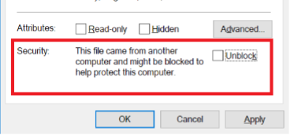
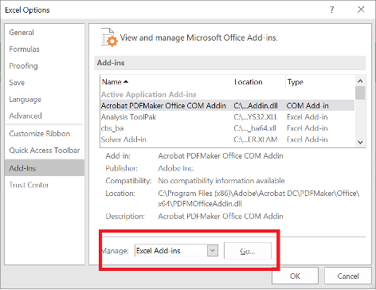

Business Analytics Multiplatform Add-in
Installing on Windows Without the .exe File
Some students will not be able to install the add-in using the .exe file. This is likely to be true if you have a corporate computer. If this is you, the installation instructions below might work for you.STEP 4 BELOW IS CRUCIAL - DO NOT FORGET STEP 4!!
- Make sure Excel is not running.
- Go to
C:\Program Files\and create a new folder calledcbs_ba_multiplatformif one doesn't already exits (if the folder exists and you are updating the add-in, delete the file in that folder). - Download the following file:
CBS_BA_Multiplatform_add_in.xlamand move it to the newly created folder. - By default, the add-in file may be blocked by Windows since it is downloaded from the internet. If you don't unblock it, the add-in may not work properly. To unblock the add-in:
- Open Microsoft Windows Explorer to locate and right-click the downloaded file, choose Properties from the context menu.
- Click the Unblock button in the lower right-hand corner of the resulting dialog.
- Click OK or Apply.
 Note: If the Unblock button is not present, the file is not blocked and this step is not needed.THIS STEP IS CRUCIAL!! DON'T IGNORE IT!!
- Open Excel and then any workbook in Excel (not the add-in).
- Go to File → Options → Add-Ins.
- In the Manage window, select Excel Add-ins → Go.
 - In the Add-Ins available dialog, click Browse and select the XLAM file you downloaded. For complete functionality, also select the Solver Add-in in the dialog.

- Click OK.
The add-in is now installed. This can be verified by noting that a new ribbon appears in the Toolbox.

IF IT DIDN'T WORK, DID YOU REMEMBER STEP 4?!